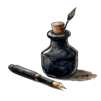

Poema: Percanta Pequeninha
Nesse dia fico muito agradecido.
Meu amigo Chico, filho e cunhada.
Hoje em diante to fazendo a prestação.
Só manda embora essa mulher desgraçada.
A casa dela eu não quero mais comigo.
Eu vou arrumar uma percanta pequeninha.
É ela nova e se ajoelha na frente de mim.
Aí que eu vou me criar com outra guria.
Gordo
